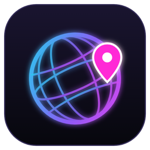

ViewerGlobe
Español
ViewerGlobe es una extensión de Twitch y un programa para OBS que muestra en el directo un globo con los espectadores que deciden apuntarse, con su nombre y su país.
Qué datos usamos
- Tu ID y nombre de usuario de Twitch, solo si aceptas compartir tu identidad con la extensión.
- El país que eliges en la lista. No usamos tu ubicación real, tu dirección IP ni tu GPS.
- La hora a la que te apuntas y la última vez que el panel estuvo abierto, para saber si sigues viendo el directo.
Para qué: para mostrar tu nombre y tu país en el globo del directo y en la lista del panel de ese canal. Nada más: no hay publicidad, no se vende ni se comparte con terceros.
Quién lo ve: los espectadores de ese canal y el streamer (en su programa ViewerGlobe).
Cuánto tiempo: desapareces del mapa cuando pulsas «Quitarme» o unos 10 minutos después de dejar de ver el directo; en ese momento se borran tus datos del servidor. El streamer también puede quitarte del mapa.
Dónde: en un servidor de Cloudflare usado solo para esta función.
Contacto: chulanguermanker@gmail.com · twitch.tv/chulanguermanker
English
ViewerGlobe is a Twitch extension and an OBS app that shows a globe on stream with the viewers who choose to join, with their name and country.
Data we use
- Your Twitch user ID and display name, only if you agree to share your identity with the extension.
- The country you pick from the list. We do not use your real location, IP address or GPS.
- When you joined and when the panel was last open, to know whether you are still watching.
Why: to show your name and country on the stream globe and in that channel's panel list. Nothing else: no ads, nothing is sold or shared with third parties.
Who sees it: that channel's viewers and the streamer (in their ViewerGlobe app).
How long: you leave the map when you press "Remove me" or about 10 minutes after you stop watching; your data is deleted from the server at that point. The streamer can also remove you.
Where: on a Cloudflare server used only for this feature.
Contact: chulanguermanker@gmail.com · twitch.tv/chulanguermanker